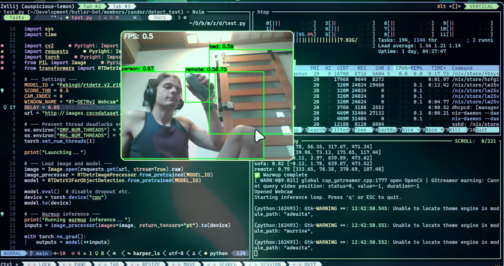
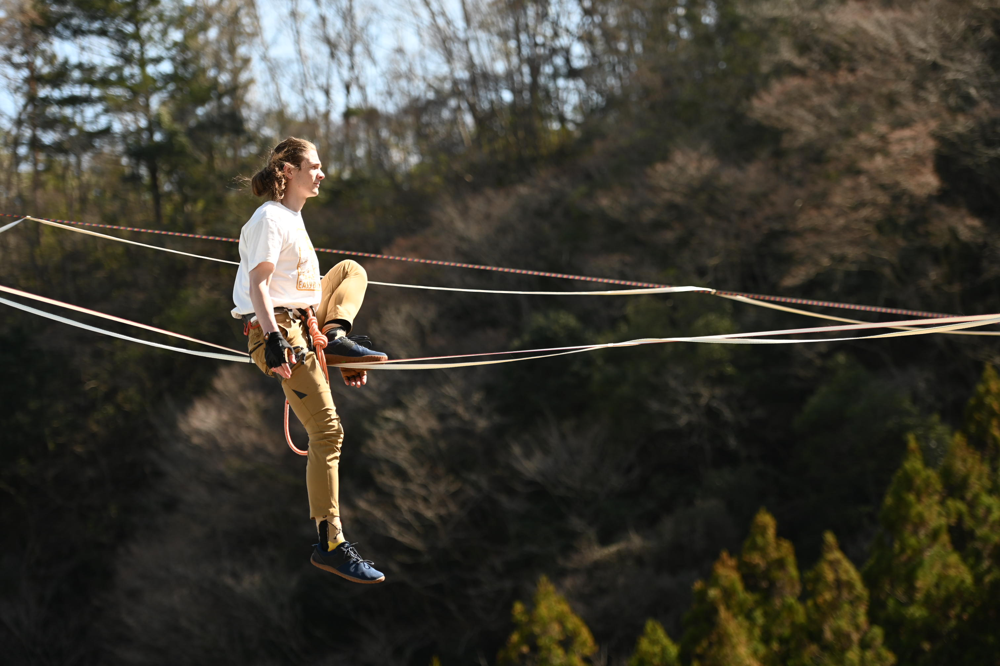
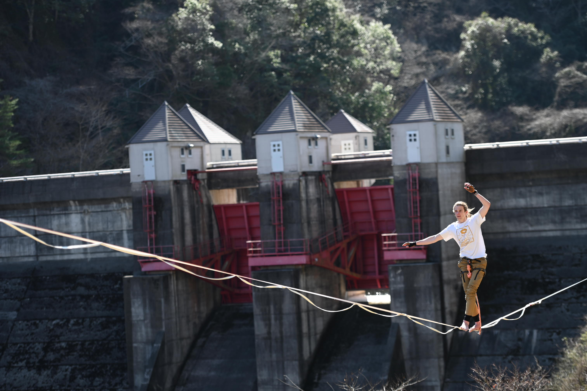

Robotics & Perception
ROS, SLAM, visual odometry, object detection and sensor-driven autonomous systems.
ROSOpenCVRF-DETR
Computer Engineer · Robotics Researcher
Advanced Robotics master's student in Japan with practical experience taking embedded IoT and computer-vision systems from prototype to deployment.


Profile
My work spans embedded Linux, real-time vision, device communication and robotics integration. I enjoy the point where algorithms meet actual hardware: constrained compute, unreliable networks, sensor noise and deployment requirements.
ROS, SLAM, visual odometry, object detection and sensor-driven autonomous systems.
Development for constrained edge systems, from microcontrollers to embedded Linux computers.
Video pipelines, microservices, device protocols, CI/CD and reliable remote deployments.
Experience
UViRCO · South Africa / China
Rapid Mobile · South Africa
Various organisations · Japan
Selected work
Representative projects from my CV. Replace the placeholder repository links as the project pages become public.

B.Eng. Final-Year Project
Android SLAM application built with Qt and OpenCV, including visual odometry as a fallback localisation mode.
View GitHub profile
Community Engineering
PCB-based, solar-powered environmental monitoring prototype using GSM for remote data transmission.
View related work
Team Robotics Project
Perception layer for a Jetson Nano mobile robot, integrated with a LiDAR navigation stack through ROS.
View related workBeyond the build
A few moments from engineering communities, hands-on robotics and life outside the lab.




Education
Chiba Institute of Technology · Japan
University of Pretoria · South Africa
Toolbox
C/C++, Python, Qt/QML, MATLAB
STM32, Raspberry Pi CM4/CM5, NVIDIA Jetson Nano, Intel Altera SoC FPGA, PIC18
English · Japanese (JLPT N3)
Open-source archive
The carousel loads public repositories from GitM3 automatically. It remains usable with local fallback cards if the GitHub API is unavailable.
Get in touch
I am open to research collaboration, technical conversations and engineering opportunities.